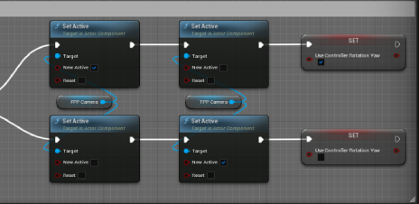

Introduction
This summer (2022), I decided to take the opportunity to challenge myself and expand my knowledge of game design and Unreal Engine. I wrote down 50 things I wanted to learn how to create and took on each, one thing at a time.
Overview
This page will go through each and every item on my list, showcasing what the outcome was.
**Note**
Many of these items that I learned came from different tutorials on YouTube and were re-created in my own projects for learning purposes. In order to make them more my own, I tried to take different design strategies and update them past the tutorial.
#1 - Inventory System
An inventory system that works with a database of items, each based on a struct of variables
System takes into account if an item is stackable as well as the max stack if true
Works by an actor component attached to each blueprint and requires a max size for the inventory
UI knows whether to open up just the player's inventory or a double inventory for moving items between inventories
#2 - Dynamic Footsteps
Depending on the surface the character walks on, different sounds will play
Makes use of physical surfaces and materials to recognize the surface
Each surface has a different number of footstep sounds to avoid repetition
#3 - Slow Motion
Added slow motion to work 2 different ways
If set up as seen in the picture, everything in the world will be set to .5 speed, but the player will be at normal speed
If the last 2 nodes on each path of the Flip Flop are disconnected, everything including the player will be at .5 speed
#4 - Change Perspective
First, a second camera was set up on the character so that it may switch to first-person
When the "ChangePerspective" button is pressed, it checks to see if the third-person camera is active and will set the correct camera to active

#5 - Ragdoll Effect
When the player collides with a certain object, the mesh is launched
After a couple of seconds, they return to a normal state
#6 - Cascade Particles
Using the Cascade particle system, I was able to create different particle effects like the fireball seen to the right
#7 - Stylized Mouse Cursor
By using a widget of an image, I was able to set my mouse cursor in-game using software cursors in the project settings
#8 - Camera Shake
Using the "Perlin Noise" pattern, I tested various combinations to achieve the effects I wanted
I then wrote notes on the different outcomes of these combinations
#9 - Ability System
A system that has various abilities the player can choose from
Each one has its own animation, cast time, and cooldown
Ultilized Cascade to create the effects
#10 - Sprint/Crouch
Gave the player the ability to crouch and sprint
The sprint not only increases the speed but also decreases a stamina bar
After stopping the sprint, the player slowly regains that stamina
#11 - AI Walking
Utilizing the behavior tree, an NPC is able to wander around the level
It will choose a random location after each movement and move to that location
#12 - AI Perception
Building upon the basic movement of the NPC, if it sees the player, it will chase them


#13 - Setting up a Scene
Set up a desert scene using assets from Quixel Bridge
Utilized the Sky Light, Sky Atmosphere, and Atmospheric Fog to get the desired effect
Piloted a Cine Camera Actor to maintain the correct angle while placing objects
#14 - Health Bar UI
Set up a HUD for the player that shows their current health as a progress bar
Made the progress bar look stylized and changed how it moved
Decided to go with a fish tank rather than traditionally styled health bar
#15 - Switching Characters
Set up 2 different ways:
1. When pressing the "switch character" button, the mesh and animations of the player character will change
2. When pressing the buttom, the player will posses a different character in the level
#16 - Health System
Gave the player a total health amount and created blueprints to deal damage or heal
Utilized a blueprint interface to change the stats of the player character
Used the construction script to change the platform's text and color when the amount to deal to the character is input
#17 - Taking In-Game Screenshots
When the "screenshot" button is pressed, a console command executes
A picture is saved to the "saved" folder in the project files
#18 - Function Libraries
Used a function library to make it easier to change the input mode
Utilized the different functions in multiple different blueprints and widgets
#19 - Upgrading Player Stats
Created blueprints to increase/decrease the player's stats
Utilized a blueprint interface to go into the player character and set their max health or speed to a new amount
#20 - Settings Menu
Created a settings widget that gets pulled up when the player presses the appropriate button
Allows them to change screen resolution, texture quality, frame rate limit, and more
Also includes an "optimal" button to run a benchmark test and apply the best settings for the computer

#21 - Save Settings
Improving upon the settings menu, included a save functionality to remember settings on future playthroughs
Loads every setting to what in the save
#22 - Day/Night System
Created a system that will change the sun's direction as the game is played
When the sun hits a certain point, the sky is changed to night or day
#23 - Save Game State
Save Game system incorporated into the inventory system noted at the top of the page
Saves all of the items in the player's inventory as well as items in chests
#24 - Grab Mechanic
Allows the player to pick up different items and place them back down
Uses a physics constraint component to interact with the different items
#25 - Enumerations
Utilized enumerations to find and describe different character states
Created a switch on the default movement mode enumeration as well as a custom enum
#26 - Placing Foliage
Using the foliage mode and downloaded assets from Quixel Bridge, learned the ins and outs of placing foliage on a level
Made use of size ranges, density, different tools, and more
#27 - Drag and Drop Operation
Building off of the inventory system, implemented a drag and drop operation
Allows the player to drag items between inventories
Includes a small icon of the item held as the player moves their mouse
#28 - Dynamic Input Mode
Allows the player to switch between input modes freely
Game only allows them to run around like normal
Game and UI allows the player to still walk around but also interact with different aspects of the HUD
#29 - Fall Damage
Working with the health system implemented earlier, the player takes damage when falling from a certain height
Uses the Event On Landed to get the velocity and computes it to a float value to damage the player
#30 - Moving Along a Spline
A blueprint that moves along a certain path as long as the player is close enough
Acts like a "guide" leading the player to wherever the designer chooses
#31 - Respawning at a Safe Location
Every couple of seconds, an event is called that checks to see if the player is currently falling
If false, a variable is set that determines where that player will respawn when killed
#32 - Keypad to Open Door
Uses a widget included in a door blueprint that takes a certain combination
If the combination is correct, the door is opened, otherwise it resets
#33 - Hold Input
Allows the player to hold down a certain button to accomplish a task
This example uses a test bush that after holding down an input, a certain amount of berries are collected
#34 - AI Find Location
Created for an in-development restaurant game, spawns a certain amount of AI every few seconds at a certain time of day
Once spawned, the AI finds a specific "table" (for now just a chair) and stands by it
After a specific period of time, the AI walks away and despawns
#35 - Cooking System
A cooking station blueprint pulls up a widget allowing the player to create a basic meal
Players can see the required ingredients and how many they have
Pressing the button will show a progress bar that once completed, will give the player the meal
#36 - Importing a Landscape
Used a heightmap found online and changed the image size to match one listed on Unreal Engine's Landscape Technical Guide
Imported the file into Unreal Engine and adjusted the z value on its scale to reduce the dramatic slopes of the mountains
#37 - Building System
Allows the player to place objects similar to Fortnite's editing mode
Walls and other objects are placed on a grid to prevent overlap
#38 - Double Jump
Utilizing the setting in the character movement component, the number of jumps the player could do was changed
Also utilized the max jump hold time to allow players to hold the jump button to go higher

#39 - Grappling Hook
Implemented a grappling hook for the character that allows them to swing from different objects
Can set it to only attach to certain things or everything
#40 - Water System
Using the water plugin for Unreal Engine, tested various bodies of water and the settings within them
Also tested buoyancy objects to float in those bodies of water
#41 - Pushing Objects
Within a blueprint containing a static mesh cube, I added a physics constraint as well as 2 box collisions for the x and y axis
The swinging and twisting motions were locked to prevent the cube from moving in any other direction
#42 - Checkpoint System
Created a miniature course the player has to jump up to reach a certain "checkpoint"
The checkpoint blueprint saves the player's respawn point when stepped on
If the player fails and dies, they will respawn on that checkpoint
#43 - Hotbar
Working with the same inventory system implemented earlier, a second inventory component was added to the player's hud
This inventory can hold items just like the regular inventory but has a smaller max size
The hotbar stays on the player's HUD as opposed to the toggle-able main inventory
#44 - Fast Travel
Using a very basic UI for the "map", the player can click on 4 different fast travel locations
When they click on one of these locations, the player can select the "fast travel" button and be teleported there
#45 - Farming System
Allows the player to select a certain seed to plant when interacting with a plot of dirt
Each seed has different grow time and will update the mesh every x seconds as it grows
Images are of a test plant that changes the material as it grows
#46 - New Modeling Mode
Explored the new modeling mode in Unreal Engine 5
Utilized this mode to create various static meshes
Sculpted meshes to create new and complex shapes
#47 - Item Inspection
Allow the player to pick up and look at a held item
Pulls up a menu of button options and a description
Lets player rotate and move the item
#48 - Dialogue System
A system that implements text bubbles for dialogue with NPCs
Allows for multiple responses and different outcomes for each

#49 - Quest System
Allows players to collect different quests
Includes widget to pull up accepted quests
Knows when to complete certain quests
#50 - Minimap
A widget that shows the character's location on the map within a certain radius
Also includes other important landmarks